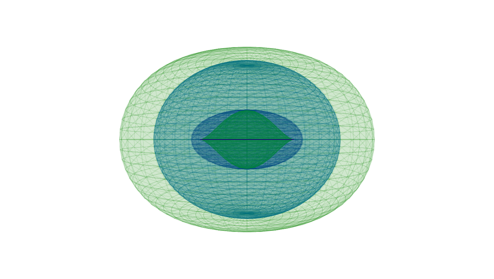
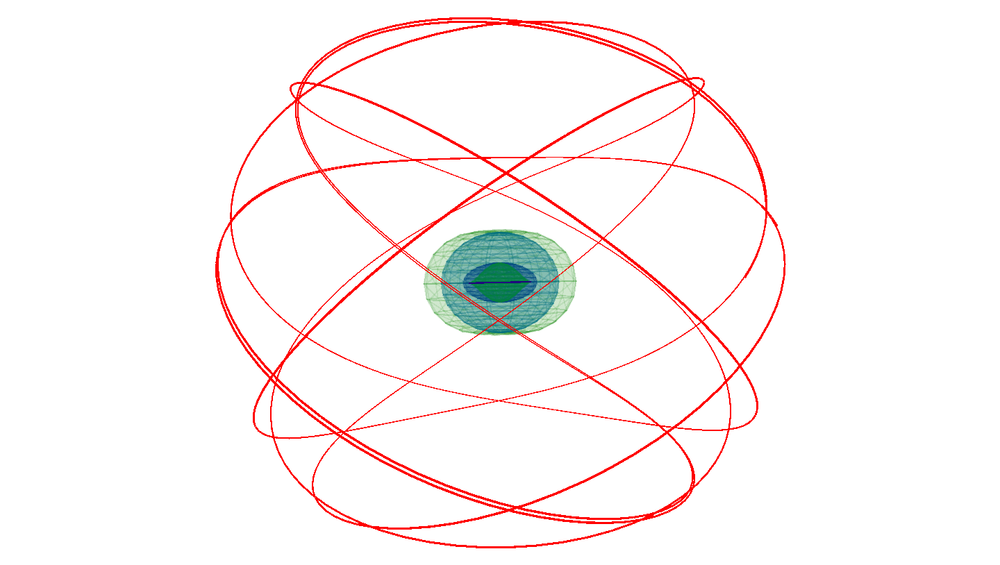

Intro
This project is about visualising Kerr black holes and simulating geodesics in Kerr spacetimes. It contains tools to investigate the surfaces and geodesics of Kerr black holes.
It aroses from my master thesis about geodesics in Kerr spacetimes. It was motivated by Leo C. Stein, who did great work on spherical photon orbits in Kerr geometry. It was implemented with Javascript and WebGL using p5.js.
I would like to share these tools primarily with students and lecturers for educational purposes. Here is the Code.
Visualizer(Cartesian) · Visualizer(BL) · Geodesic
Kerr Black Holes
Black holes are regions in spacetime exhibiting gravitational acceleration so strong that nothing is able to escape from it. Black holes are predicted by Einstein's theory of general relativity.
They can hold only three independent physical properties by the so called no-hair theorem: mass, angular momentum and charge. Uncharged, rotating black holes are described by the Kerr metric and are often called Kerr black holes. It is common to express the Kerr metric in Boyer-Lindquist coordinates as follows
\( ds^{2} = -\left( 1 - \frac{2Mr}{\Sigma} \right) dt^{2} -\frac{4aMr}{\Sigma} \sin^{2}{\theta} \, dt \, d\phi + \frac{(r^{2} + a^{2})^{2} - a^{2} \, \Delta \, \sin^{2}{\theta}}{\Sigma} \sin^{2} \, {\theta} \, d\phi ^{2} + \frac{\Sigma}{\Delta} dr^{2} + \Sigma \, d\theta^{2}, \)
where \( r, \theta, \varphi \) are standard spherical coordinate system with following abbreviations
\( \Delta(r) = r^{2} - 2 M r + a^{2} \quad und \quad \Sigma(r, \theta) = r^{2} + a^{2} \cos^{2}{\theta}. \)
\( \Sigma \) is referred to the singularity of the black hole. It can be derived by \( \Sigma = 0 \). Everything is in geometric units \( G = c = 1 \) and \( M = 1 \).
Kerr Black Hole Visualizer
This tool allows you to visualize the surfaces of a rotating black hole. The Kerr parameter \( a \) can be changed to investigate different scenarios like Schwarzschild metric (\( a=0 \)) or extreme Kerr solution (\( a=1 \)).
The surfaces are calculated with the following formulas.
Inner and outer event horizon:
\( r_H^\pm = M \pm \sqrt{M^2 - a^2} \)
Inner and outer ergosphere:
\( r_E^\pm = M \pm \sqrt{M^2 - a^2 \cos{\theta}^2} \)
Whereas the singularity \( \Sigma \) is given by \( r=0 \land \theta = \pi/2 \).
According to the tool the surfaces will be visualized in different coordinate systems. Either cartesian coordinates or Boyer-Lindquist coordinates.
Kerr Geodesic Simulator
This tool allows you to calculate geodesics in Kerr spacetimes.
Geodesics are the straightest-possible lines as prescribed by the geometry of spacetime. Their motion is described by the geodesic equation
\( \frac{d^{2} x^{\kappa}}{dt^{2}} + \Gamma^{\kappa}_{\mu \nu} \frac{dx^{\mu}}{dt} \frac{dx^{\nu}}{dt} = 0 \)
where \( \Gamma^{\kappa}_{\mu \nu} \) are the Christoffel symbols of the metric.
According to [1.] the geodesics in Kerr spacetimes can be computed with the following formulas:
\( \dot r = \frac{\Delta}{\Sigma} p_r \)
\( \dot \theta = \frac{p_\theta}{\Sigma} \)
\( \dot \varphi = \frac{2arE + (\Sigma - 2r)L/\sin^2 \theta}{\Sigma \Delta} \)
\( \dot \tau = E + \frac{2r(r^2 + a^2)E-2arL}{\Sigma \Delta} \)
\( \dot p_r = \frac{1}{\Sigma \Delta} \left( ((r^2 + a^2)\mu - \kappa)(r-1) + r\Delta \mu + 2r(r^2 + a^2)E^2 - 2aEL \right) - \frac{2p_r^2(r-1)}{\Sigma} \)
\( \dot p_\theta = \frac{\sin \theta \cos \theta}{\Sigma} \left( \frac{L^2}{\sin^4 \theta} - a^2(E^2 + \mu) \right) \)
where \( \kappa = Q + L^2 + a^2(E^2 + \mu) \). \( \mu, E, L, Q \) are the so called constants of motion. The inital conditions are given by \( (r, \theta, \varphi, \tau, p_r, p_\theta) \).
The tool uses 4th order Runge-Kutta method to integrate the system of ODE's. It is possible to adjust the stepsize \( dt \), even during runtime. The integration can be paused at any time.
Delete geodesic to reset the simulation with given inital conditions. You are able to take screenshots and to export the simulation data at any time.
References
- Radiation transfer of emission lines in curved space-time, S. V. Fuerst, K. Wu, A&A 424 (3) 733-746 (2004), DOI: 10.1051/0004-6361:20035814
- The Mathematical Theory of Black Holes, S. Chandrasekhar, Clarendon Press, Oxford Classic Texts in the Physical Sciences
© Alexander Nieddu